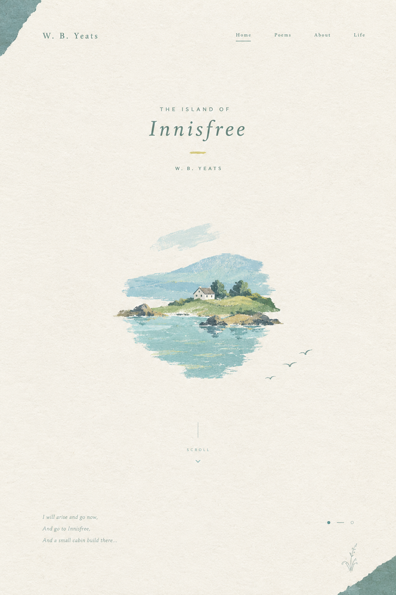

节奏 RHYTHM
读出诗句的快慢与轻重，感受它怎样推动情绪。
A POEM FOR THE EAR
走近 W. B. Yeats 的诗歌与音乐

“有些诗写给眼睛，
有些诗也写给耳朵。”
选择一处，开始你的聆听。
⌁一封写给岁月的信，轻轻说起爱与记忆。
When you are old and grey and full of sleep,
And nodding by the fire, take down this book,
And slowly read, and dream of the soft look
Your eyes had once, and of their shadows deep;
How many loved your moments of glad grace,
And loved your beauty with love false or true,
But one man loved the pilgrim Soul in you
And loved the sorrows of your changing face;
And bending down beside the glowing bars,
Murmur, a little sadly, how Love fled
And paced upon the mountains overhead
And hid his face amid a crowd of stars.
当你老了，头白了，睡意昏沉，
炉火旁打盹，请取下这部诗歌，
慢慢读，回想你过去眼神的柔和，
回想它们昔日浓重的阴影；
多少人爱你青春欢畅的时辰，
爱慕你的美丽，假意或真心，
只有一个人爱你那朝圣者的灵魂，
爱你衰老了的脸上痛苦的皱纹；
垂下头来，在红光闪耀的炉子旁，
凄然地轻轻诉说那爱情的消逝，
在头顶的山上它缓缓踱着步子，
在一群星星中间隐藏着脸庞。
袁可嘉译
WHO IS HE?
William Butler Yeats 1865 — 1939
叶芝不仅写诗，
也在寻找诗歌的声音。
读诗时，先让耳朵走在解释前面。
读出诗句的快慢与轻重，感受它怎样推动情绪。
相似的词语与句式反复出现，像副歌一样加深印象。
风、鸟、湖水与钟声，让诗句有画面，也有回响。
叶芝亲自朗诵
A VOICE FROM THE PAST
请留意他的停顿、重音，以及湖水、鸟鸣和钟声般的回响。
聆听叶芝的声音
I will arise and go now, and go to Innisfree,
And a small cabin build there, of clay and wattles made;
Nine bean-rows will I have there, a hive for the honey-bee,
And live alone in the bee-loud glade.
And I shall have some peace there, for peace comes dropping slow,
Dropping from the veils of the morning to where the cricket sings;
There midnight’s all a glimmer, and noon a purple glow,
And evening full of the linnet’s wings.
I will arise and go now, for always night and day
I hear lake water lapping with low sounds by the shore;
While I stand on the roadway, or on the pavements grey,
I hear it in the deep heart’s core.
我就要动身走了，去茵纳斯弗利岛，
搭起一个小屋子，筑起泥笆房；
支起九行云豆架，一排蜜蜂巢，
独个儿住着，荫阴下听蜂群歌唱。
我就会得到安宁，它徐徐下降，
从朝雾落到蟋蟀歌唱的地方；
午夜是一片闪亮，正午是一片紫光，
傍晚到处飞舞着红雀的翅膀。
我就要动身走了，因为我听到
那水声日日夜夜轻拍着湖滨；
不管我站在车行道或灰暗的人行道，
都在我心灵的深处听见这声音。
选自《叶芝文集》（东方出版社，1996），袁可嘉译
A SMALL LISTENING TASK
选一个词形容这首诗的声音。哪一处最让你想象到茵纳斯弗利岛？
跟着这首诗，听见心愿、脚步和湖水。
诗的开头，诗人说：
I will arise and go now, and go to Innisfree.
意思是：“我就要动身走了，去茵纳斯弗利岛”。这句话里的 go 重复出现，像是心里一次次响起的念头。到了诗的结尾，诗人又说自己“就要动身走了”，让开头的愿望重新回到耳边。这种呼应像歌曲重复的副歌一样：即使诗人身在远方，想去岛上的心愿始终没有消失。
朗读第一行时，可以把 arise 和 go now 稍稍读重，想象诗人真的迈出脚步。读到岛上的景象，语气则慢下来：
And I shall have some peace there, for peace comes dropping slow…
“我就会得到安宁，它徐徐下降”。Slow（缓慢，徐徐）不仅写出宁静，也让朗读的速度自然放慢。读到 dropping（滴落，下降）时，可以轻轻停顿，仿佛听见水滴落下。诗的节奏随着画面变化：起初像出发的脚步，后来渐渐舒缓，像湖水轻轻荡开。
诗里不只有景色，也有声音：
这些声音有高有低、有远有近：蟋蟀像细小的歌声，湖水像低柔的伴奏，蜜蜂则带来持续的嗡鸣。读者仿佛跟着诗人走进岛上的清晨与黄昏。
有些诗读完就结束，有些诗会继续在耳边回响。
叶芝的《茵纳斯弗利岛》写的是一个简单而深切的愿望：离开喧闹的生活，去湖中小岛寻找宁静。诗人没有大声诉说，而是让这个愿望随着诗句的节奏一遍遍响起。
开头的 “I will arise and go now” 像一次下定决心，也像歌曲中反复出现的副歌。诗中的湖水轻拍、蟋蟀歌唱、蜜蜂嗡鸣，让岛屿不只看得见，也仿佛听得见。
推荐叶芝，是因为他的诗不只描写宁静，还让人听见宁静。读这首诗，我们可以想象一片属于自己的“茵纳斯弗利岛”：也许是湖边，也许是熟悉的角落，或是一段能让自己安静下来的时光。
关掉朗诵之后，诗句还留在耳边。也许这就是叶芝的音乐：让语言轻轻唱过，仍在人心里回响。
语言本身，也会唱歌。
THE DEEP HEART’S CORE